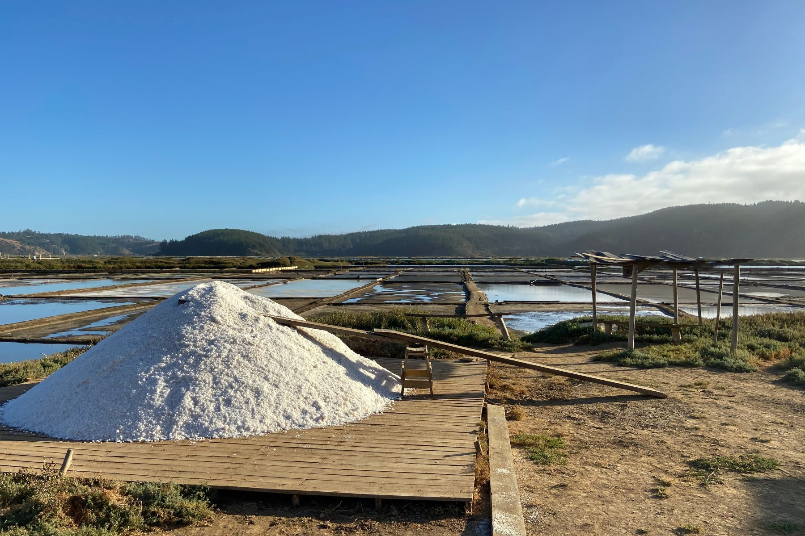

Visión
Ser una marca reconocida a nivel nacional e internacional por transformar la pasión familiar y la cocina tradicional chilota en productos innovadores y saludables, expandiendo nuestros sabores únicos desde Puerto Varas hacia el mundo, mientras seguimos creciendo junto a nuestros clientes con dedicación, cercanía y excelencia.